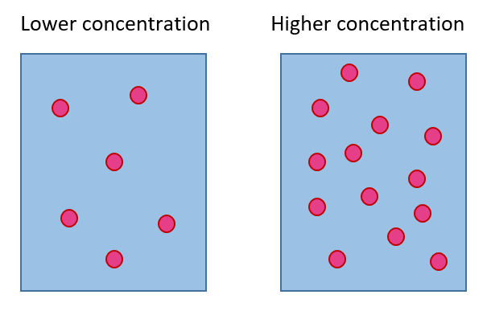

Concentration
The concentration of a mixture (such as salt water) can be measured as the weight of the solvent (the substance
that dissolves, such as salt) divided by the weight of the solute (which is often water).
One common measure of concentration is grams of solvent (salt) per grams of solute (water).
Concentration is related to density: The higher the concentration of a mixture, the more dense the solvent (for example, salt) is in that mixture.

For example, the picture above shows a lower and higher concentration of a solvent (the pink dots) in a liquid.